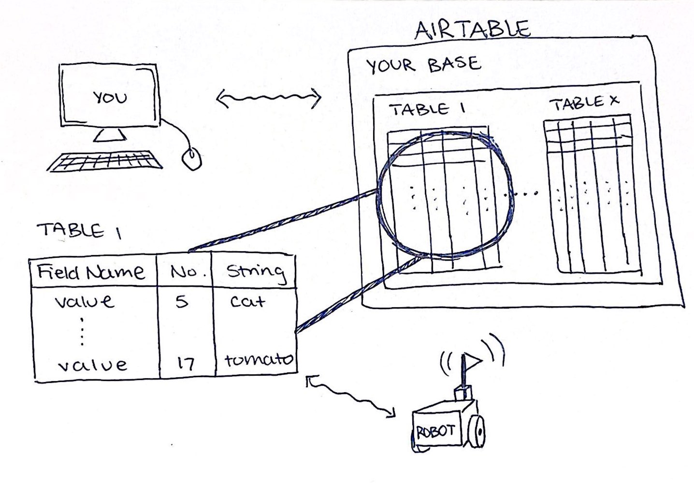

Please open this form and fill it out as you do the hackathon. One submission per group! (Unless you really want to be extra and submit two, but you do you!) GOOGLE FORMS LINK
A Quick Overview of Telerobotics
Click on a tab to learn more!
HACKATHON TASK: Read through these tabs, and write down one or two comments / confusions you have. Or, let us know if you have none. Please read / watch ONE of the articles / videos (we will assign them) and answer : Do you think the article / video that you interacted with was relevant? Helpful? Informative? etc. (or at least, ya know, skim the article / video... don't take too much time on this) Do you know of another cool real-world example of telerobotics?
At the most basic level, telerobots are remotely controlled robots.
In this workshop, we want to demonstrate the process of building, coding, connecting telerobots over long distances. The telerobots will be either a SPIKE Prime or a Raspberry Pi 4 with a PiHat (using SPIKE Prime motors, sensors, etc.). To communicate, one person will send commands to Airtable (described in the next tab), and these commands will be read by a receiving source that reads the commands and runs the corresponding action to the command.
Airtable lets you create a base which holds all of your tables. Tables are like spreadsheets that you can update from anywhere, and they can hold all sorts of values, like numbers, strings, and dates! Inside a table, there are fields. Each field has a datatype assigned to it, so numbers can only go in number fields, and so on. Your robot will read your Airtable and act based on the data that you write to it.

In our examples, we use Airtable to allow our computers and robots to write and receive commands (respectively) over long distances. We post commands to Airtable that a receiving robot or computer subscribes to, interprets, and translates into the corresponding action.
Based on documentation originally written by Dr. Ethan Danahy Dr.E's Lab
HACKATHON TASK: We want your photos here!! Please upload (good) photos of your robot at the end of the hackathon.
When you're building, think about...
HACKATHON TASK: Come up with one (or more) questions / ideas to inspire or challenge robot builders
Code Your Robot
Already have ideas? Go for it!!
We want to do this in as many ways as possible. So please-- do something different than us!
Need some guidance?
We've set up an Airtable where each robot has a little "mailbox" for commands. The mailbox is identified by a unique ID. To move the correct robot, please make sure you send your movement commands to the correct "mailbox". We will assign you mailboxes!
Grab a partner and work together to send and recieve commands on your robot. Use the displays below to do so! And let us know if you have any questions / concerns.
SENDING MOVEMENT INFORMATION
These action buttons don't do anything at the moment. Copy the code below into your own editor to add your own actions!
Want to play around with this code that sends the commands to Airtable? Here's the
GitHub link!
RECEIVING MOVEMENT INFORMATION
Are you using SPIKE Prime or Raspberry Pi + PiHat?
SPIKE Prime
To receive the correct movement commands:
Make sure you subscribe to the correct "mailbox" number.
Click on the SPIKE Prime ServiceDock icon in the upper right-hand corner of the page. Select the port your robot is connected to. Once the circle turns from red to green, you're good to go! If you're having issues connecting, make sure you're closed out of any other SPIKE Prime-related software. ServiceDock can't compete with all that. :(
The robot may take a second to register the first command. If it doesn't work after a couple seconds, though, please let us know!
Want to play around with this code? Here's the GitHub Link! Activity Extensions
HACKATHON TASK: Come up with one (or more) questions / ideas to inspire or challenge coders. Also, was there anything confusing about our current structure?
Raspberry Pi + PiHat
To receive the correct movement commands, make sure you:
Activity Extensions
HACKATHON TASK: Come up with one (or more) questions / ideas to inspire or challenge coders. Also, was there anything confusing about our current structure?